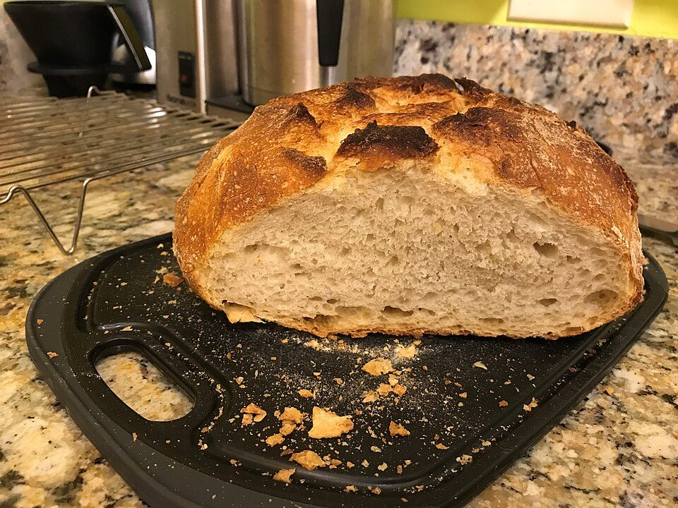

Instagramをのぞいてみたいです。投稿が増えたら、ぜひ見てみたいです。
口コミ
想像した声
以下は制作側の創作で、実在のお客様の投稿ではありません。
パンのお店と聞くと、行ってみたい気持ちが湧いてきます。
営業時間が分かったら、足を運んでみたいです。
3件とも、制作側が書いた創作文です。実在のお客様の声ではありません。
写真(イメージ)
パンの写真



写真はパンのイメージです。お店のものではありません。
口コミ
以下は制作側の創作で、実在のお客様の投稿ではありません。
Instagramをのぞいてみたいです。投稿が増えたら、ぜひ見てみたいです。
パンのお店と聞くと、行ってみたい気持ちが湧いてきます。
営業時間が分かったら、足を運んでみたいです。
3件とも、制作側が書いた創作文です。実在のお客様の声ではありません。
写真(イメージ)

写真はパンのイメージです。お店のものではありません。